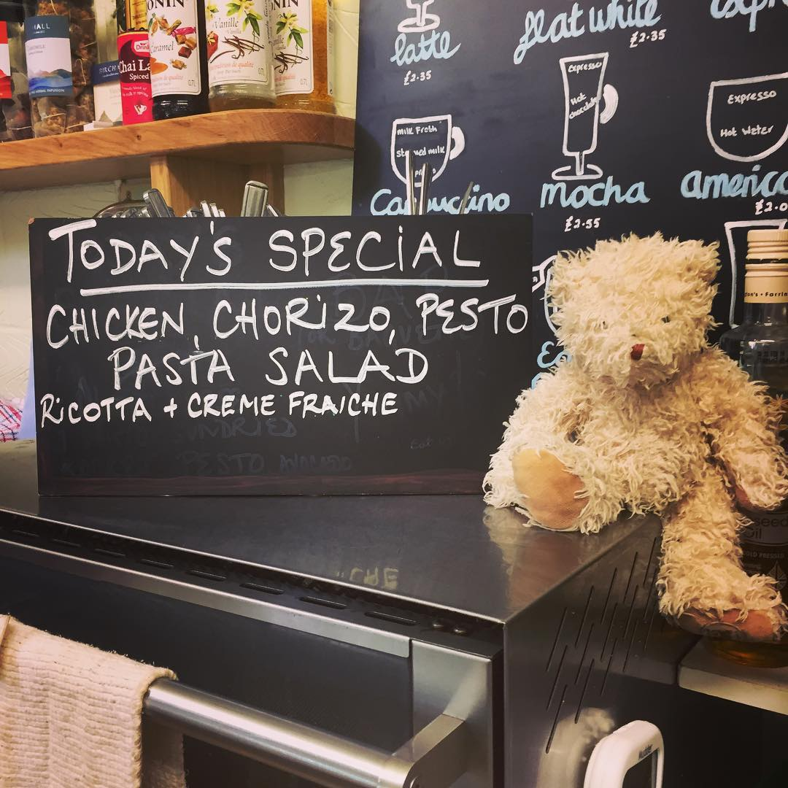

The Café/Deli
The Café/Deli is open Monday to Sunday 08:30–14:00, with last orders for the café at 13:30.
The deli-café menu is published on a blackboard outside the shop and includes hot pies and sausage rolls; sandwiches, wraps, baps and toasties; hot drinks, milkshakes, chilled soft drinks, iced coffee; cakes and tray bakes and more.
Food and drinks purchased from the deli can be taken away or enjoyed inside the shop and at our outdoor picnic tables.


